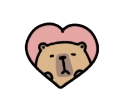

Juego de Valores del Evangelio
Aprende sobre compasión, honestidad, generosidad y paz a través de juegos divertidos.

ℹ️
Información sobre el juego
Nombre: Juego de valores
Sección: B2
Integrantes: Teresa Ruiz, Paola Martinez,
Ricardo Pérez y Gerardo Tamayo